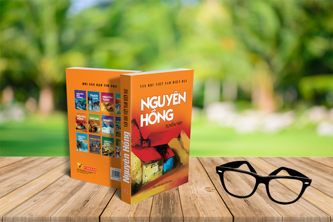

Vài nét giới thiệu về Nguyên Hồng
Họ tên đầy đủ của tác giả là Nguyễn Nguyên Hồng. Sinh ngày 5-11-1918 tại thành phố Nam Định. Ông sinh ra trong một gia đình nghèo và mồ côi Cha, từ nhỏ ông đã phải cùng Mẹ ra Hải Phòng kiếm sống. Tuổi thơ của ông có rất nhiều điều bất hạnh.
Trong giới văn học Việt Nam, nhà văn Nguyên Hồng được anh em đồng nghiệp và bạn đọc ưu ái gọi bằng một “danh hiệu”: Nhà văn của phụ nữ và trẻ em.
Trong những tác phẩm của Nguyên Hồng, hình ảnh người phụ nữ và trẻ em trong xã hội cũ được nhà văn dành nhiều niềm yêu thương, đồng cảm. Với những đóng góp to lớn của mình dành cho nền văn học dân tộc. Và vào năm 1996 ông được nhà nước truy tặng giải thưởng Hồ Chí Minh về văn học nghệ thuật năm 1996.

Những tác phẩm nổi tiếng của Nguyên Hồng
Nguyên Hồng có rất nhiều tác phẩm nổi tiếng như:
- Bảy Hựu
- Trong cảnh khốn cùng
- Hai nhà nghề
- Mợ Du
- Hai dòng sữa
- Buổi chiều xám
- Bỉ vỏ
- Những ngày thơ ấu
- ……………….
Nhưng có lẽ đặc sắc và nổi tiếng nhất của Nguyên Hồng chính là tác phẩm “ Những ngày thơ ấu” đã được đưa vào trong chương trình giảng dạy trong trường học.
Nội dung của “Những ngày thơ ấu” là một tập hồi ký viết về tuổi thơ cay đắng khắc nghiệt của chính tác giả.
Tác phẩm gồm có 9 chương:
- Chương 1: Tiếng kèn
- Chương 2: Chúa thương xót chúng con
- Chương 3: Trụy lạc
- Chương 4: Trong lòng Mẹ
- Chương 5: Đêm Nô-en
- Chương 6: Trong đêm đông
- Chương 7: Đồng xu cái
- Chương 8: Sa ngã
- Chương 9: Một bước ngắn
Mở đầu tác phẩm là một gia đình bất hạnh. Cha và Mẹ tác giả lấy nhau chỉ vì 2 bên gia đình, một bên cần người nối dõi tông đường, một bên thì muốn con gái mình có chỗ dựa. Đối với họ, trước và sau khi hôn nhân đều không hề có tình yêu, họ sống với nhau trong một gia đình mà tưởng chừng như đó chính là nấm mồ chôn sống họ.
Hồng chính là đứa con được sinh ra trong một đêm miễn cưỡng bởi sự ép buộc, thúc dục của dòng họ, cần có người nối dõi tông đường. Sống mà như đã chết, không hạnh phúc, không có lối thoát, người đàn ông nhanh chóng xa đà vào Rượu. Một sự đau khổ đến tột cùng đè nặng lên người vợ tên Lộc.
Tuy không yêu chồng nhưng chị vẫn ứa nước mắt khi mỗi lần nhìn thấy chồng mình ôm ngực ho và rũ rượi nhổ, chị cắn răng chịu đựng, không nói một lời oán trách nào. Tuy nhiên, trong lòng chị lại có hình bóng của một người đàn ông khác. Khi chồng chết, chị phải di tha hương cầu thực trong Thanh Hóa để kiếm tiền trả nợ.
Và Hồng – nhân vật chính, phải trải qua một tuổi thơ đầy bất hạnh. Hồng được sinh ra không phải bằng tình yêu của Bố Mẹ. Bố Hồng sa vào nghiện hút và chết sớm. Mẹ Hồng phải đi buôn bán, chạy chợ ở khắp các tỉnh mà không mấy khi ở nhà, Mẹ Hồng không yêu Bố, đi theo các mối tình khác và trở nên xa lạ với gia đình nhà chồng. Hồng phải cam chịu cảnh sống cùng bà nội và hai người cô rất ít tình thương cháu.
Khi còn nhỏ bé mà đã phải thiếu đi tình cảm của Bố và Mẹ, Hông thiệt thòi biết bao, càng thiệt thòi hơn khi Hồng phải sống trong sự ghẻ lạnh của gia đình, ngay từ rất sớm Hồng đã phải trải qua tình cảnh đầu đường xó chợ, tiếp xúc với những con người ở tầng lớp đáy. Hồng nhanh chóng học được nhiều những mánh khóe để kiếm tiền, Hồng đã có thể kiếm tiền bằng đánh đáo.
Đánh đáo có tiền, nhưng có lần cậu suýt bị người Bố giành lấy mất để mua thuộc phiện, một tình cảnh thật đáng chua xót cho tình cha con. Còn với người Mẹ luôn vắng nhà, xa lạ với gia đình nhà chồng, phải chịu mang nhiều tính xấu, cậu lại luôn dành tình cảm đặc biệt, luôn luôn lo lắng và bảo vệ, lúc nào cũng muốn xà vào lòng, vào vòng tay của Mẹ.
Kết thúc hồi ký là một sự bất công, một oan khuất không thể nào giải tỏa được khi Hồng bị thầy giáo dùng những nhục hình đề trừng phạt Hồng chỉ vị một sự nghe nhầm…….